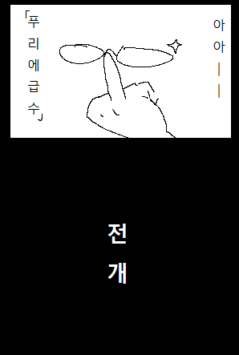

대단히 신기하군요! 그렇다면 실제 파형을 근사할 수도 있나요?
글쓴이: 코르 (logicseeker@naver.com)
※ 초보가 독학한 후 작성한 글이라 오류가 많습니다.
※ 이 글은 크롬 브라우저에서 테스트되었습니다.
이 장에서는 실제 파형을 근사하는 방법과 근사된 파형을 다시 소리로 재현하는 과정에 대해서 탐구합니다.
코르
대단히 신기하군요! 그렇다면 실제 파형을 근사할 수도 있나요?
푸리에
실로 그렇습니다. 이번엔 목소리의 파형을 근사해보도록 합시다.
(마이크가 없다면 이 과정은 건너뜁시다) 콘솔 창에 아래와 같이 입력합니다. (치기 귀찮으면 복사 붙여넣기 ㄱ)
if (navigator.mediaDevices) {
console.log('getUserMedia 사용 가능');
navigator.mediaDevices.getUserMedia({ audio: true, video: false })
.then((stream) => {
getUserMediaFlag = true;
const AudioContext = window.AudioContext || window.webkitAudioContext;
actx = new AudioContext({ sampleRate: 44100 });
const source = new MediaStreamAudioSourceNode(actx, { mediaStream: stream });
analyser = new AnalyserNode(actx, { fftSize: 1024, maxDecibels: -30, minDecibels: -100, smoothingTimeConstant: 0.8 });
source.connect(analyser);
dataSize = analyser.frequencyBinCount;
audioData = new Uint8Array(dataSize);
window.requestAnimationFrame(showVoice);
})
.catch((err) => {
console.log('getUserMedia 중 오류 발생');
});
} else {
console.log('getUserMedia가 지원되지 않음');
}
마이크 권한을 얻고 성공하면 마이크에서 들어오는 데이터를 분석기(analyser)에 보내는 코드입니다.
그럼 마이크를 허락해달라는 창이 뜰 것입니다. 목소리 파형을 취할 것이니, 당연히 수락해야만 합니다.
...그럼 아래의 canvas 요소에 목소리 파형이 나타날 것입니다.
아, 에, 이, 오, 우 중 원하는 모음을 하나 고르고 그 소리를 내면서, 위의 '데이터 취득 및 확인' 버튼을 누릅니다. 아래 canvas 요소에 '파형의 한 주기' 가 명확히 보일 때까지 반복적으로 시도하십시오.
※ 참고: 이 데이터는, 콘솔창에 console.log(takenAudioData) 라고 입력해도 그 정체를 확인할 수 있습니다.
다음으로, 한 주기가 대충 어디부터 어디까지 위치해 있는지 눈어림으로 읽고, 콘솔창에 다음과 같이 입력합니다.
sliceFrom = 0; // ← 이 숫자를 지우고 주기의 시작을 입력
sliceTo = 256; // ← 이 숫자를 지우고 주기의 끝을 입력
const sliced = takenAudioData.slice(sliceFrom, sliceTo);
const refined = [];
for (let i = 0; i < sliced.length; i++) {
refined[i] = (sliced[i] / 128) - 1;
}
전체 파형 데이터에서 필요한 부분만큼만을 잘라내고(slice), 데이터가 [-1, 1) 사이에 있도록 하는 코드입니다.
이상의 과정으로, 우리가 근사할 데이터를 얻었습니다.
이제 콘솔창에 아래와 같이 입력해 푸리에 계수를 구합니다. 푸리에 계수를 구하는 코드는 다음 장에서 볼 수 있으니 기대해 주세요!
const coef = new Coef(99);
coef.getA0((t) => refined[Math.floor(t)], refined.length, 10);
coef.getAn((t) => refined[Math.floor(t)], refined.length, 10);
coef.getBn((t) => refined[Math.floor(t)], refined.length, 10);
이제 모든 준비가 끝났습니다. 콘솔창에 아래의 명령을 입력해서 '근사한' 파동을 확인해 봅시다.
approxWave(coef);
코르
아니 어떻게 이럴 수가! 원본 파형과 굉장히 유사하군요!
푸리에
하하 이것이 푸리에 급수의 힘입니다.
이제 콘솔창에 아래와 같이 입력합니다...
const audioBuffer = new AudioBuffer({ numberOfChannels: 1, length: 1000 * refined.length, sampleRate: actx.sampleRate });
const buffering = audioBuffer.getChannelData(0);
let count = 0;
for (let i = 0; i < audioBuffer.length; i++) {
buffering[i] = refined[count];
if (count === refined.length - 1) {
count = 0;
} else {
count++;
}
}
function play() {
const absn = new AudioBufferSourceNode(actx, { buffer: audioBuffer });
absn.connect(analyser)
.connect(actx.destination);
absn.start();
}
play();
window.requestAnimationFrame(showReproducedVoice);
... 갑자기 소리가 나와서 놀라셨나요? 이것이 근사된 파동(여러분이 아까 위에서 낸 소리)을 소리로 재현해낸 것입니다.
한편 어쩐지 재현된 소리에서 음이 들릴 수도 있습니다! 그 이유는 아래와 같다고 생각합니다.
취한 데이터는 사실 (데이터 길이) * 1/44100 (초) 만큼의 파형입니다. 저 길이가 한 주기이므로, 1을 저 주기로 나누면 주파수를 얻을 수 있습니다. 예를 들자면, 256 * 1/44100 = 0.0058이지요. 이것의 역수는 172.4138 (Hz) 입니다.
한편, A4 (4옥타브 라) 의 주파수는 440Hz입니다. 한 음계는 12음으로 이루어져 있고 옥타브가 하나 올라갈 때마다 주파수가 2배 증가하므로, A3은 220Hz입니다. 라에서 4음 밑으로 내려가면 파가 나옵니다. 이 파의 주파수는 그러므로 220 * 2^(-4/12) = 174.6141 (Hz) 입니다.
172와 174는 대단히 가깝습니다! 이것이 취득한 파형이 음처럼 들리는 이유가 아닐까요?
아무튼, 여기까지만 해도 흥미롭습니다. 하지만 진짜 재미는 다음부터입니다! 「푸리에 급수 '전개'」 라고 외치며 다음으로 나아갑시다.
※ 이미지 출처: 저의 지인 중 한 분